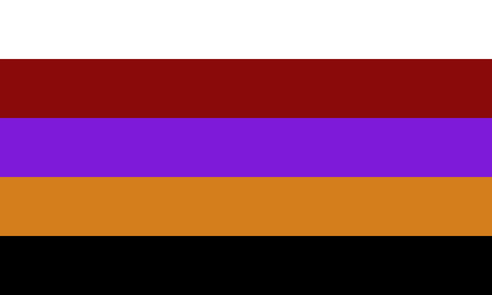
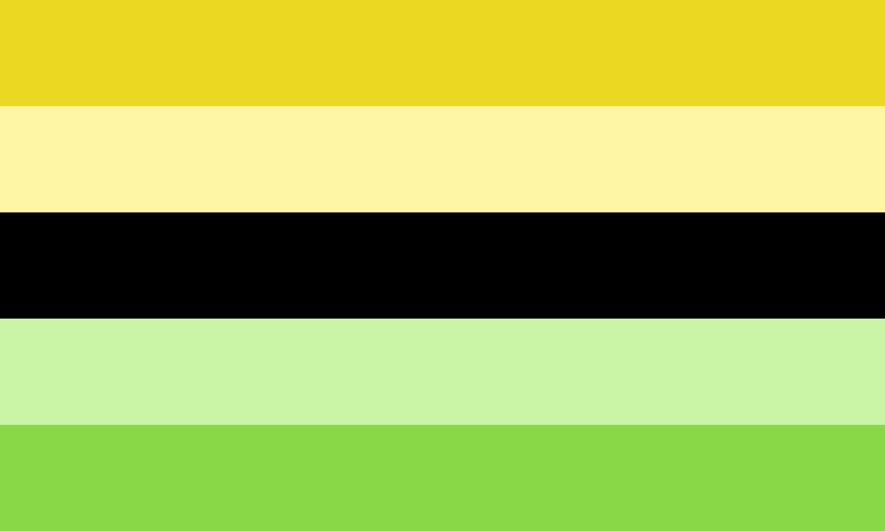
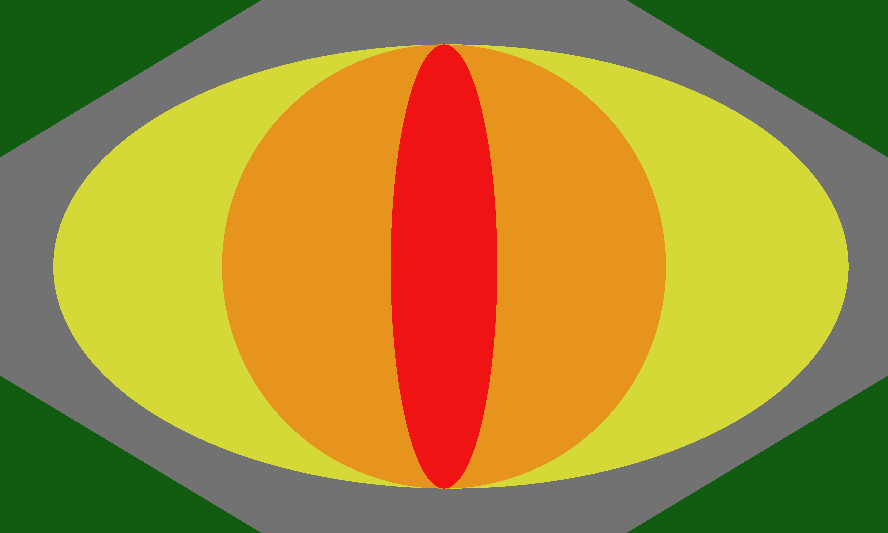
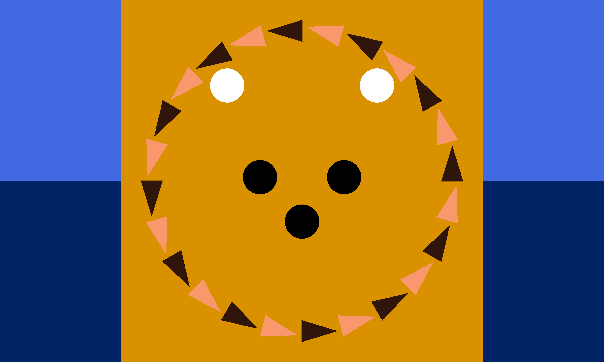
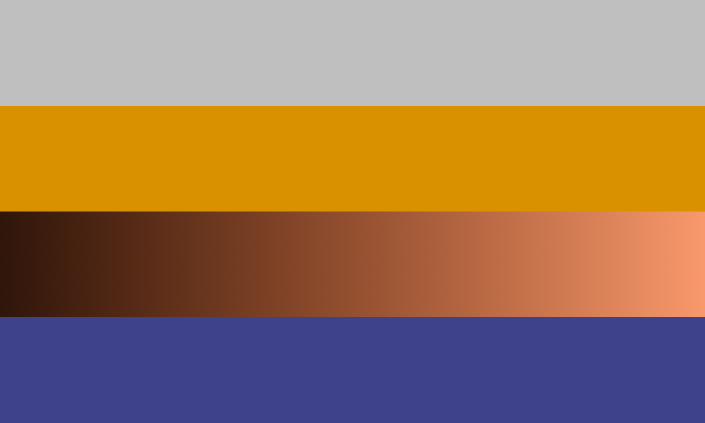
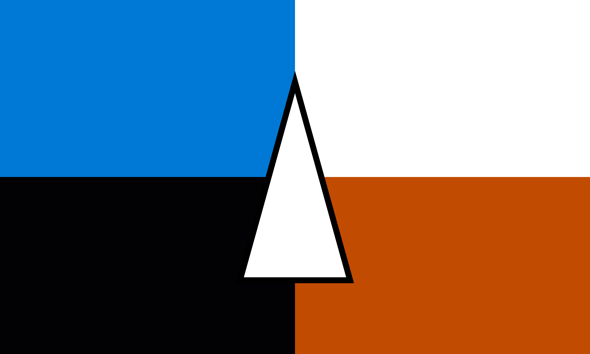
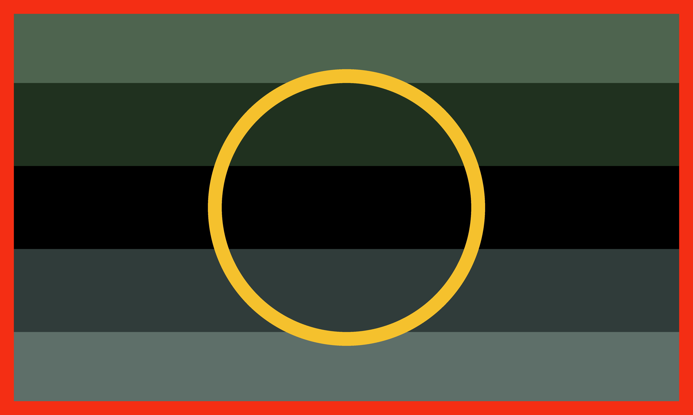

I, unfortunately, don't remember the meaning of most of the stripes on this flag. I believe the purple represents royalty and the orange represents lions.

The yellow stripes represent one gender possessed by the individual; the green represent the other gender; the black represents a lack of gender.

The colors chosen are often associated with dragons, and the shape in the middle is meant to evoke a cat's eye/lizard eye.


The colors of the two flags are based on the colors of the original liongender flag, with the black and white gradient being replaced with brown and tan. The first flag is meant to evoke a lion's face.

The blue is taken from the Microsoft Windows logo, the white represents Apple's systems (macOS, iOS, etc.), the near-black is taken from Tux and represents Linux-based systems, and the orange (blue's complement) represents other systems. The triangle represents a mouse pointer, one of the main ways an operating system facilitates communication between the user and the hardware.

The dark colors represent darkness and slimy things, the yellow circle represents the One Ring, and the red border represents a feeling of entrapment.
The colors of these flags are all taken from their respective Eeveelutions. The shapes have no meaning.